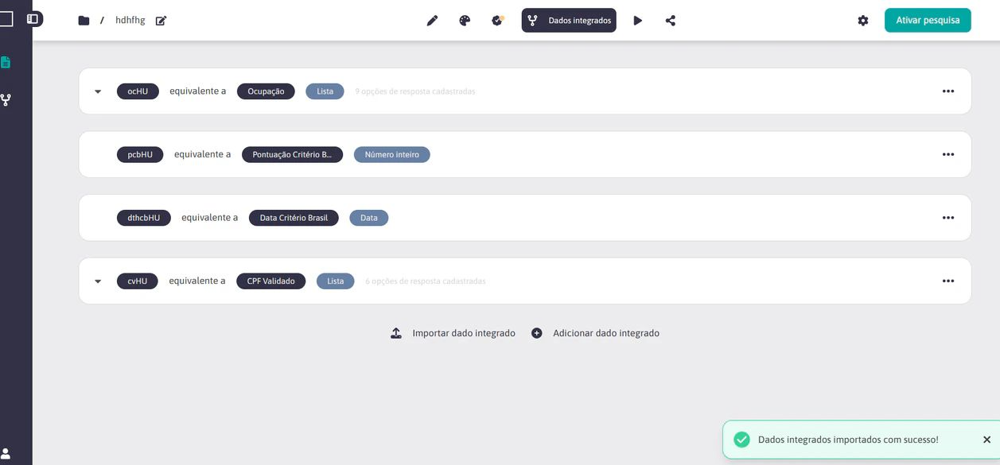
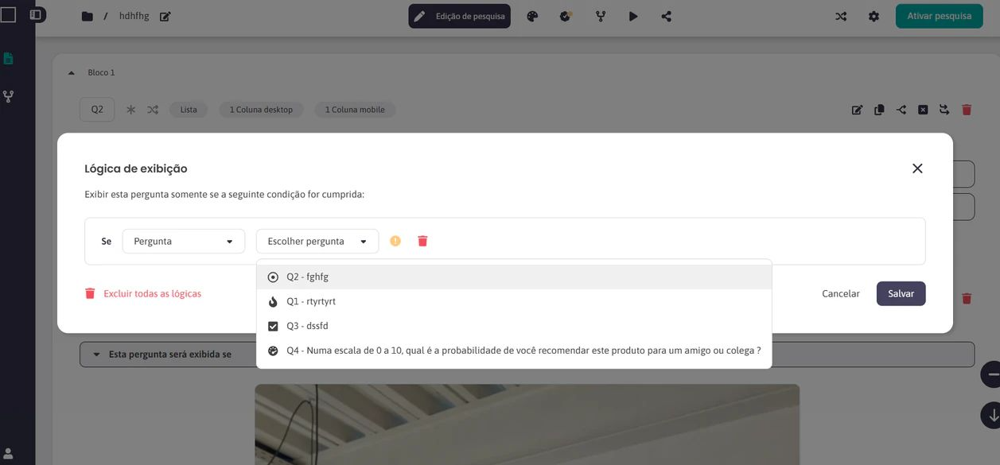
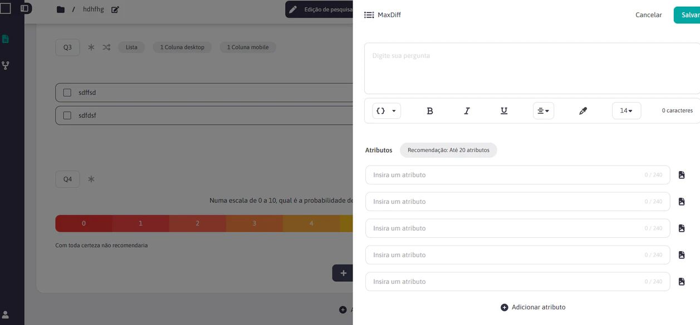
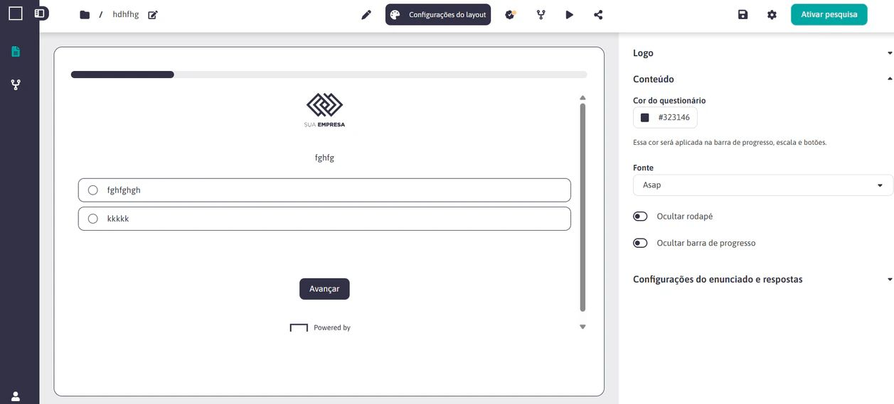
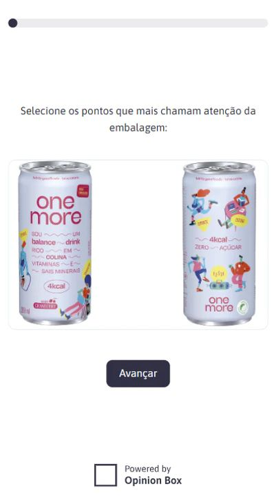

De uma licença prestes a expirar para autonomia de produto.
A Opinion Box dependia de uma ferramenta externa para operar sua coleta de dados. Um aumento relevante no custo da licença tornou a continuidade inviável, e a empresa tinha uma janela de oito meses para construir uma alternativa própria sem interromper a operação.
Substituir sem parar
Recriar o core necessário para a operação antes do vencimento da licença, sem sacrificar confiabilidade.
Priorizar o essencial
Mapear regras, reduzir o escopo ao MVP operacional e deixar evoluções não críticas estruturadas em backlog.
Base proprietária
Um sistema integrado ao ecossistema da Opinion Box, com governança própria e espaço para evolução comercial.
O prazo era de negócio, não de design.
Para sustentar milhares de pesquisas, a empresa precisava de um motor de criação de questionários que suportasse mais de dez tipos de pergunta, lógicas condicionais, crivos, randomização, piping e metodologias como NPS, matrizes, ranqueamento e MaxDiff.
Ao mesmo tempo, o produto precisava atender dois públicos com necessidades quase opostas: analistas altamente especializados, que exigiam profundidade e controle, e respondentes, que precisavam de uma experiência simples, rápida e adaptada ao mobile.
Com oito meses, a primeira decisão foi o que não construir.
O escopo completo era maior do que a janela disponível. Por isso, a priorização não foi uma etapa posterior ao design: ela definiu o próprio desenho do produto. O MVP foi orientado pelo conjunto mínimo capaz de manter a operação funcionando com qualidade e previsibilidade.
Core antes de completude
Funcionalidades necessárias para substituir a operação existente entraram primeiro; evoluções não essenciais foram organizadas para ciclos posteriores.
Prevenção antes de correção
Validações, estados críticos e controle de dependências foram desenhados para evitar configurações inválidas antes da publicação.
Complexidade visível, não confusa
Menus contextuais, accordions, badges e hierarquias claras ajudaram a representar regras metodológicas sem escondê-las do analista.
Um sistema, duas experiências
O builder foi otimizado para produtividade; a experiência do respondente, para clareza, responsividade e baixa carga cognitiva.
Benchmark para entender padrões. Auditoria para entender o que não podia quebrar.
Analisamos plataformas como Qualtrics, SurveyMonkey e Typeform para compreender padrões de construção, navegação entre blocos e tratamento de lógicas. O objetivo não era copiar soluções, mas entender expectativas consolidadas em produtos maduros.
Em paralelo, mapeamos dezenas de regras de negócio já usadas pelos analistas. Essa auditoria foi essencial para traduzir conhecimento operacional e metodológico em comportamentos de produto previsíveis.

O trabalho de design estava nas dependências.
Uma pergunta isolada é simples. O problema aparece quando uma regra depende de outra pergunta, uma lógica interfere no fluxo, uma alternativa precisa ser randomizada ou uma metodologia exige estruturas específicas. Foi nesse nível que a arquitetura da experiência precisou trabalhar.



Princípio que guiou o desenho: simplificar não significava remover profundidade metodológica; significava organizar essa profundidade em uma interface que ajudasse o usuário a tomar decisões sem perder contexto.
O produto não terminava quando o analista clicava em publicar.
Grande parte do tráfego de respostas vinha de dispositivos móveis. Por isso, a experiência do respondente precisava funcionar como um produto próprio: hierarquia clara, controles acessíveis, feedbacks previsíveis e adaptação de componentes complexos a telas menores.
Em testes de usabilidade, um dos focos foi validar como estruturas mais densas, como matrizes e perguntas especiais, poderiam se adaptar sem comprometer leitura ou interação.

O que nasceu como necessidade operacional virou ativo estratégico.
Com o lançamento, processos que dependiam de terceiros passaram a existir dentro do ecossistema da Opinion Box. A solução teve alta aderência às necessidades internas, baixo índice de bugs relatado no projeto e avaliações positivas dos usuários internos.
Mais importante: a robustez construída para resolver a operação começou a abrir uma nova discussão de negócio. Uma ferramenta proprietária, em português e adaptada ao mercado local poderia deixar de ser apenas infraestrutura interna e evoluir como produto comercial.
Independência operacional
Menos dependência de ferramentas externas e dos custos associados.
Governança de produto
Lógicas, crivos e regras passaram a operar de forma nativa no ecossistema.
Eficiência
Uma base única para criar e gerenciar pesquisas com maior consistência.
Oportunidade comercial
O produto passou a ser discutido também como potencial oferta para o mercado.
Comecei liderando design. Terminei atuando também na definição do produto.
Atuei como Product Designer Líder e, posteriormente, como Analista de Produto, acompanhando o projeto do discovery ao delivery. Minha responsabilidade foi além da interface: participei da priorização, documentação, tradução de regras de negócio, comunicação com stakeholders e definição dos comportamentos que sustentavam o produto.
Benchmark, diagnóstico, mapeamento de requisitos e entendimento dos fluxos existentes.
Priorização do MVP, definição de escopo e tradução de regras metodológicas em requisitos.
Arquitetura, fluxos, prototipação e aplicação do Design System proprietário.
Documentação, alinhamento com stakeholders, acompanhamento de implementação e validações.
Este projeto mudou a escala da minha atuação. A pergunta deixou de ser apenas “como esta tela funciona?” e passou a incluir “qual parte do sistema precisa existir agora, quais dependências isso cria e como garantir que o produto continue evoluindo depois do lançamento?”.